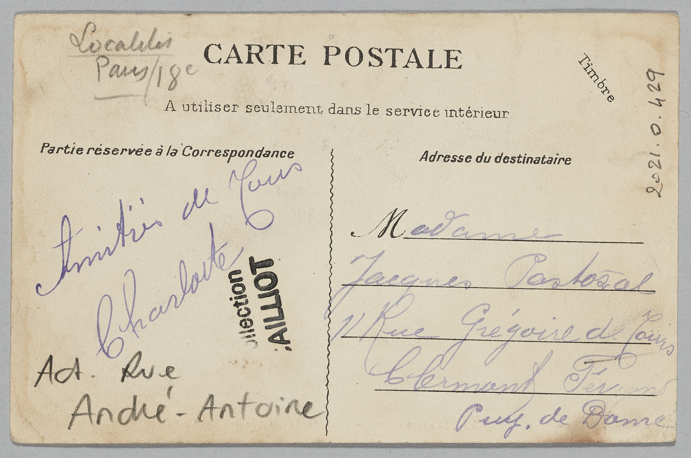

## Z652: Digital Libraries Metadata I: Metadata Fundamentals and Dublin Core John Walsh [jawalsh@iu.edu](mailto:jawalsh@iu.edu) --- ## Today - What is metadata? - Metadata records, elements, and values - Metadata schemas and element sets - Dublin Core - Obligation and cardinality - Hands-on: describe → map → decide → compare - Introduction to metadata application profiles <!-- **Break: 10:25–10:40** --> --- ## Learning objectives By the end of class, you should be able to: - Define metadata and explain several purposes it serves. - Distinguish descriptive, administrative, structural, and technical metadata. - Identify metadata **records, elements/fields, and values**. - Explain the purpose of a metadata schema or element set. - Identify appropriate **Dublin Core** elements for common digital objects. - Explain **obligation** and **cardinality/repeatability**. - Explain at a basic level what a **metadata application profile (MAP)** does. - Connect Dublin Core concepts to CollectionBuilder metadata. --- ## [Final Project Proposal](https://jawalsh.github.io/z652-Digital-Libraries-FA26/assignment_final_project_proposal.html) --- <!-- .slide: class="activity" --> ## What did you find? ### <!-- 9:10–9:20 --> Pairs → whole class Return to the CollectionBuilder metadata you examined before class. - What fields did you find in `metadata.csv`? - Which field was immediately understandable? - Which field was less obvious? - Which fields **describe the item**? - Which fields seem to exist because **CollectionBuilder needs them**? Be ready to share one example. --- ## From Week 4 to Week 5 Last week, we used metadata as part of a working system: <div class="workflow"> **metadata.csv** ↓ **CollectionBuilder** ↓ **item pages + browse + search + discovery** </div> This week we step back and ask: > **How should we design the metadata itself?** --- <!-- ## A basic metadata model ```text one row = one record one column = one element / field one cell = one value ``` For example: ```text record: photograph #23 element: title value: Students outside the Indiana Memorial Union ``` > **record → element → value** --> ## A basic metadata model <table style="font-size: 0.68em;"> <thead> <tr> <th>objectid</th> <th>title</th> <th style="background-color: #ddd;">creator</th> <th>date</th> <th>subject</th> </tr> </thead> <tbody> <tr> <td>obj001</td> <td>Students outside the IMU</td> <td style="background-color: #ddd;">Jane Smith</td> <td>1952</td> <td>Students</td> </tr> <tr style="outline: 4px solid #9b1c31;"> <td>obj002</td> <td>Homecoming parade</td> <td style="background-color: #ddd;">John Doe</td> <td style="background-color: #f2d675; font-weight: bold;">1961</td> <td>Parades</td> </tr> <tr> <td>obj003</td> <td>Sample Gates</td> <td style="background-color: #ddd;">Jane Smith</td> <td>1985</td> <td>Buildings</td> </tr> </tbody> </table> <div class="columns" style="margin-top: 1em;"> <div> ### Row = record Everything describing one item. </div> <div> ### Column = element / field One category of information. </div> <div> ### Cell = value One particular piece of metadata. </div> </div> --- ## What is metadata? ### <!-- 9:20–9:40 --> A useful starting point: > **Metadata is structured information about a resource.** But that raises questions: - What information? - About what kind of resource? - Structured how? - Structured for whom—or for what system? - For what purposes? --- <!-- .slide: class="activity small" --> ## What does metadata do? ### Whole class Think about a digital collection you have used. What does its metadata allow you—or the system—to do? Possible starting points: - identify - find - distinguish - select - access - organize - manage - preserve - relate Can one metadata value serve more than one purpose? --- ## Types of metadata <div class="columns small"> <div> ### Descriptive Helps identify, discover, and understand a resource. - title - creator - subject - description ### Structural Describes relationships among parts. - page sequence - chapters - files belonging to one object </div> <div> ### Administrative Supports management of a resource. - rights information - acquisition information - digitization information ### Technical Describes technical characteristics. - file format - dimensions - resolution - file size </div> </div> --- <!-- .slide: class="activity" --> ## What kind of metadata is this? ### Quick classification How would you classify each? - `The Waste Land` - `T. S. Eliot` - `image/jpeg` - `600 dpi` - `Copyright 1922...` - `page 3 of 12` - `digitized 2024-06-14` - `modernism` Some values may reasonably fit more than one category. --- ## From information to schemas ### <!-- 9:40–9:55 --> Suppose every digital collection simply invents its own fields: ```text writer author creator made_by responsible_person ``` All might mean roughly the same thing. What problems could this create? --- ## Metadata schemas and element sets A metadata schema or element set provides a defined set of elements for describing resources. It can help establish: - shared names for elements; - shared definitions; - greater consistency; - documentation; - exchange and reuse of metadata. But a standard does **not** make every local decision for us. --- ## Dublin Core **Dublin Core** is a general-purpose metadata element set designed to describe a wide variety of resources. Today we concentrate on the original **15 elements** in the Dublin Core Metadata Element Set. You do **not** need to memorize them. Resource: [Dublin Core Metadata Element Set, Version 1.1](https://www.dublincore.org/specifications/dublin-core/dces/) --- ## The 15 Dublin Core elements ### <!-- 9:55–10:15 --> <div class="columns small"> <div> - Contributor - Coverage - Creator - Date - Description - Format - Identifier - Language </div> <div> - Publisher - Relation - Rights - Source - Subject - Title - Type </div> </div> > Think of these as **broad semantic buckets**, not a complete set of instructions for creating metadata. --- ## Similar—but not the same <div class="columns small"> <div> ### Creator / Contributor Who is primarily responsible? Who else contributed? ### Type / Format What kind of resource is it? What physical or digital form does it take? ### Publisher / Creator Who made the intellectual content? Who made it available? </div> <div> ### Source / Relation Is this derived from another resource? How is it related to other resources? ### Coverage / Subject Is a place or time the scope of the resource, or is it what the resource is about? ### Identifier / Source How do we identify this resource versus the resource from which it derives? </div> </div> --- <!-- .slide: class="activity" --> ## Which Dublin Core element? ### Whole class Where might you record each value? ```text JPEG 1947 Monroe County, Indiana Jane Doe https://example.org/item/123 Photographs A crowd gathers outside the theater... ``` Are any of these ambiguous? > Using a standard still requires **interpretation and decisions**. --- <!-- .slide: class="activity" --> ## First mapping exercise ### <!-- 10:15–10:25 --> Individual → whole class Look at the sample digital object. 1. What information would you record about it? 2. Which Dublin Core element would contain each piece of information? 3. What value would you enter? Then compare: - Did everyone choose the same information? - Did everyone map it to the same elements? - Is anything important difficult to represent? --- <!-- .slide: class="activity small" --> ## From object to metadata ### <!-- 10:15–10:25 --> Whole class <div class="columns small"> <div> <p class="smaller"> <strong>Image:</strong> Indiana University Archives Photograph Collection, P0051710. © Indiana University. </p> </div> <div> ### Information available about the object This black-and-white photograph shows students walking toward the Indiana Memorial Union on the Indiana University Bloomington campus. It was taken on September 13, 1965, by the Indiana University News Bureau. The original was photographed on Kodak Tri-X Pan safety film; the donor image number is Frame 2. The photograph is associated with the series “Groups” and the subseries “Freshmen on campus.” It is part of the Archives Photograph Collection and is held by the Indiana University Archives in Bloomington. Indiana University is identified as the copyright owner. The accession number is 99/075, and the source identifier is P0051710. The title supplied for the photograph is “Students walking toward IMU.” </div> </div> > **What information should we record, and which Dublin Core elements should we use?** --- ## From object to metadata record <div class="workflow"> **digital object** ↓ **identify useful information** ↓ **select metadata elements** ↓ **supply values** ↓ **metadata record** </div> The schema helps with the middle step—but it does not make all of the decisions. --- ## Break ### <!-- 10:25–10:40 --> <!-- Please return by **10:40**. --> **object → information → element → value** --- ## Dublin Core isn't enough ### <!-- 10:40–10:55 --> Suppose our collection uses these elements: ```text Title Creator Date Description Subject ``` We still have decisions to make. For example: > Must every record have a creator? That is a question of **obligation**. --- ## Obligation An application can specify whether an element is: - **required** — a value must be supplied; - **recommended** — supply a value when appropriate/available; - **optional** — a value may be supplied. The exact labels and rules can vary. The important question is: > **What must a metadata creator do for this collection?** --- <!-- .slide: class="activity" --> ## What should be required? ### Whole class For our sample collection, consider: ```text Title Creator Date Description Subject Rights Identifier ``` Which should be: **REQUIRED | RECOMMENDED | OPTIONAL** What happens when information is unknown? --- ## Another unanswered question ### <!-- 10:55–11:10 --> Suppose we decide to use `Creator`. How many creators can an item have? ```text Creator: Jack Kirby ``` What about: ```text Creator: Jack Kirby Creator: Stan Lee Creator: Joe Sinnott ``` That is a question of **cardinality**. --- ## Cardinality and repeatability Cardinality describes how many values an element may—or must—have. Examples: ```text exactly one 1 zero or one 0–1 one or more 1–many zero or more 0–many ``` A **repeatable** element can contain multiple values. --- <!-- .slide: class="activity" --> ## How many values? ### Whole class What cardinality might make sense for: - Title? - Creator? - Subject? - Date? - Identifier? - Language? Would your answer always be the same for every collection? > Metadata standards provide possibilities; collections establish **local rules**. --- ## We are adding rules At the start of class: ```text Element → Value ``` Now: ```text Element ├── definition ├── obligation ├── cardinality └── value(s) ``` We are moving from a list of fields toward a documented **metadata design**. --- <!-- .slide: class="activity" --> ## Design metadata for this object ### <!-- 11:10–11:30 --> Small groups <div class="columns smaller"> <div> <a href="images/image_georges_clignancourt_associes_635._montmartre_2021.0.429_1922880.jpg"></a> <a href="images/image_georges_clignancourt_associes_635._montmartre_2021.0.429_1922883.jpg""> <p></p></a> <p class="smaller"> <strong>Object:</strong> Georges Clignancourt Associés, <em>635. Montmartre — Passage de l'Elysée des Beaux-Arts</em>. Musée Carnavalet, Histoire de Paris, 2021.0.429. CC0. </p> </div> <div class="small"> ### Information available about the object This postcard depicts the Passage de l'Elysée des Beaux-Arts in Montmartre, Paris. It was published by Georges Clignancourt Associés (G. C. A., Paris) in the early 20th century. The card measures 9 × 14 cm and was produced using typography and collotype on card. The printed caption reads “635. Montmartre — Passage de l'Elysée des Beaux-Arts.” A handwritten message reads “Amitiés de tous — Charlotte” and is addressed to Madame Jacques Pascal in Clermont-Ferrand. The card bears postage stamps and a postal cancellation. A later handwritten annotation identifies the location as “Act. Rue André-Antoine.” The postcard is held by the Musée Carnavalet, Histoire de Paris, with inventory number 2021.0.429. > **What information should we record, and which Dublin Core elements should we use?** </div> </div> --- <!-- .slide: class="activity small" --> ## Make the metadata decisions For the postcard: 1. Identify the information you think should be **recorded**. 2. Map that information to appropriate **Dublin Core elements**. 3. Supply an example **value** for each element. 4. Decide its **obligation**: - required - recommended - optional 5. Decide its **cardinality**: - one value - multiple values Be prepared to explain **one decision your group found difficult**. > Don't worry yet about rules for formatting names, dates, places, or other values. That's next week's problem. <!-- ## For now, leave these unresolved As you work, you may find yourself asking: - Which form of a person's name should we use? - Should subjects come from a fixed list? - What format should a date take? - Should we transcribe a title exactly? - How should multiple values be separated? **Notice those questions—but don't solve all of them yet.** They are the focus of Week 6. --> --- <!-- .slide: class="activity small" --> ## Compare decisions ### <!-- 11:30–11:38 --> Whole class Report one decision your group made that could reasonably have been made differently. Consider: - Did groups map information differently? - Did you disagree about what should be required? - Which elements clearly need multiple values? - Did Dublin Core give you everything you wanted? - What rules would need to be documented before **multiple people** created metadata? --- ## From standard to local practice Dublin Core might tell us that `Creator` means: > an entity primarily responsible for making the resource But our collection still needs to decide things such as: - Do we use it? - Is it required? - Can it repeat? - What counts as a creator for our materials? - How should names be entered? A general standard must be translated into **local practice**. --- ## Metadata application profiles ### <!-- 11:38–11:43 --> A **metadata application profile (MAP)** documents how a particular collection uses metadata. A simplified example: | Field | Definition | Obligation | Cardinality | |---|---|---|---| | Title | Name by which the item is known | Required | 1 | | Creator | Person/organization primarily responsible | Recommended | 0–many | | Subject | Topics represented by the item | Recommended | 0–many | This is only part of what your eventual MAP will contain. --- ## Why document the rules? Imagine three people describing 500 objects. Without shared rules, they may make different decisions about: - which fields to use; - what those fields mean; - which values are required; - how many values are allowed; - how values should be recorded. > A MAP turns implicit decisions into **explicit documentation**. --- ## Back to CollectionBuilder Last week we saw fields such as: ```text objectid title creator date description subject format identifier rights ``` Some describe the **intellectual content** of an item. Others may have a **functional role** in CollectionBuilder. Your eventual MAP needs to account for both. --- ## The Week 5 → Week 7 progression <div class="workflow"> **Week 5** Which elements do we use? What do they mean? Are they required? Can they repeat? <br> **Week 6** What values go into them? What rules make those values consistent? <br> **Week 7** Can someone else use our rules successfully? </div> --- ## Looking ahead: Metadata II Next week we add rules governing **values**: - controlled vocabularies; - preferred and variant terms; - encoding schemes / value standards; - content guidelines; - established versus local vocabularies. Then you will begin designing the MAP for your own final project. --- <!-- .slide: class="activity" --> ## Exit check ### <!-- 11:43–11:45 --> 1. What is one metadata decision that **Dublin Core itself does not make for you**? 2. What is one metadata question that today's class leaves unresolved? Keep those unresolved questions in mind for Week 6. --- ## Week 5 resources - [Dublin Core Metadata Element Set, Version 1.1](https://www.dublincore.org/specifications/dublin-core/dces/) - [DCMI Metadata Terms](https://www.dublincore.org/specifications/dublin-core/dcmi-terms/) - [NISO: *Understanding Metadata*](https://www.niso.org/publications/understanding-metadata-2017) - [CollectionBuilder documentation](https://collectionbuilder.github.io/cb-docs/)